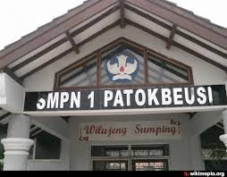

Kecamatan Patokbeusi memiliki berbagai fasilitas pendidikan yang mendukung proses belajar masyarakat mulai dari tingkat dasar hingga menengah.
Pendidikan menjadi salah satu faktor penting dalam meningkatkan kualitas sumber daya manusia dan pembangunan daerah.
Pemerintah kecamatan bersama masyarakat terus mendukung peningkatan kualitas pendidikan melalui pembangunan fasilitas dan kegiatan pendidikan.
| No | Sekolah | Jumlah |
|---|---|---|
| 1 | SD/MI | 30 lebih |
| 2 | SMP/MTS | 10 Kurang |
| 3 | SMA/SMk | 5 |